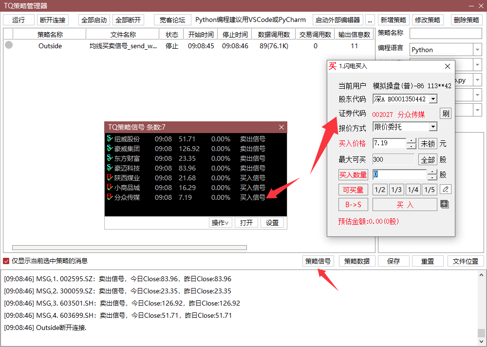

# 计算调仓信号并快速买卖
# 第一步：计算信号并发送预警，以
from datetime import datetime, timedelta
from tqcenter import tq as tdxdata
import vectorbt as vbt
import pandas as pd
# 初始化
tdxdata.initialize(__file__)
run_time = datetime.now()
run_time_str = run_time.strftime("%Y-%m-%d %H:%M:%S")
# 预警时间戳（格式：YYYYMMDDHHMMSS）
warn_time = run_time.strftime("%Y%m%d%H%M%S")
# ===================== 1. 配置参数 =====================
N = 5 # 均线周期
batch_codes = tdxdata.get_stock_list_in_sector('通达信88')
end_date = run_time.strftime("%Y%m%d")
start_date = (run_time - timedelta(days=2 * N + 20)).strftime("%Y%m%d")
# ===================== 2. 获取并处理数据 =====================
# 获取日线Close数据（保留完整索引用于日期筛选）
df_real = tdxdata.get_market_data(
field_list=['Close'],
stock_list=batch_codes,
start_time=start_date,
end_time=end_date,
dividend_type='front',
period='1d',
fill_data=True
)
close_df = tdxdata.price_df(df_real, 'Close', column_names=batch_codes)
# 计算均线+生成信号
ma = vbt.MA.run(close_df, window=N).ma
ma.columns = close_df.columns
entries = close_df.vbt.crossed_above(ma) # 上穿（买入）
exits = close_df.vbt.crossed_below(ma) # 下穿（卖出）
latest_date = close_df.index[-1] # 今日日期（DataFrame最后一行）
# 获取上一个工作日日期
prev_date = close_df.index[-2] if len(close_df.index) >= 2 else latest_date
# ===================== 3. 筛选最新买卖信号 =====================
buy_signals = {}
sell_signals = {}
# 遍历股票筛选信号
for code in batch_codes:
# 确保股票有足够的交易数据
if code not in close_df.columns:
continue
# 今日收盘价
today_close = close_df.loc[latest_date, code]
# 上一个工作日收盘价
prev_close = close_df.loc[prev_date, code] if len(close_df.index) >= 2 else today_close
# 买入信号：最新日期Close上穿均线
if entries.loc[latest_date, code]:
buy_signals[code] = {
'today_close': round(today_close, 2), # 今日close
'prev_close': round(prev_close, 2), # 上一个工作日close
'ma_price': round(ma.loc[latest_date, code], 2)
}
# 卖出信号：最新日期Close下穿均线
if exits.loc[latest_date, code]:
sell_signals[code] = {
'today_close': round(today_close, 2), # 今日close
'prev_close': round(prev_close, 2), # 上一个工作日close
'ma_price': round(ma.loc[latest_date, code], 2)
}
# ===================== 4. 生成并发送MSG =====================
def send_msg(content):
msg = f"MSG,{content}"
print(msg)
try:
tdxdata.send_message(msg)
except Exception as e:
print(f"发送失败: {e}")
# 统计行
stat_line = (
f"运行时间：{run_time_str}，均线周期：{N}天，"
f"买入信号数：{len(buy_signals)} 只，卖出信号数：{len(sell_signals)} 只"
)
print("\n=== MSG格式（TQ策略管理器显示区域）===")
send_msg(stat_line)
# 处理买入信号
if buy_signals:
send_msg(f"=== 买入信号（Close上穿{N}日均线）===")
for idx, (code, info) in enumerate(buy_signals.items(), 1):
line = f"{idx}. {code}：买入信号，今日Close:{info['today_close']}，昨日Close:{info['prev_close']}"
send_msg(line)
# 处理卖出信号
if sell_signals:
send_msg(f"=== 卖出信号（Close下穿{N}日均线）===")
for idx, (code, info) in enumerate(sell_signals.items(), 1):
line = f"{idx}. {code}：卖出信号，今日Close:{info['today_close']}，昨日Close:{info['prev_close']}"
send_msg(line)
# 无信号的情况
if not buy_signals and not sell_signals:
send_msg(f"运行时间：{run_time_str}，均线周期：{N}天，无买入或卖出信号")
# ===================== 5. 调用send_warn接口发送预警 =====================
def send_trade_warn():
"""发送买卖信号对应的预警（精简版，仅保留核心逻辑）"""
# 合并所有信号用于发送预警
all_signals = []
if buy_signals:
all_signals.extend([(code, info, '买入') for code, info in buy_signals.items()])
if sell_signals:
all_signals.extend([(code, info, '卖出') for code, info in sell_signals.items()])
if not all_signals:
print("\n无预警信息需要发送")
return
# 构造预警参数列表
codes = []
time_list = []
price_list = [] # 今日close
close_list = [] # 上一个工作日close
volum_list = []
bs_flag_list = []
warn_type_list = []
reason_list = []
for code, info, trade_type in all_signals:
codes.append(code)
time_list.append(warn_time)
price_list.append(str(info['today_close'])) # 替换为今日close
close_list.append(str(info['prev_close'])) # 替换为上一个工作日close
volum_list.append('0')
bs_flag_list.append('0' if trade_type == '买入' else '1')
warn_type_list.append('1')
reason_list.append(f"{trade_type}信号")
# 调用预警接口
try:
warn_res = tdxdata.send_warn(
stock_list=codes,
time_list=time_list,
price_list=price_list,
close_list=close_list,
volum_list=volum_list,
bs_flag_list=bs_flag_list,
warn_type_list=warn_type_list,
reason_list=reason_list,
count=len(codes)
)
print(f"\n预警发送完成，共发送 {len(codes)} 条预警，接口返回：{warn_res}")
except Exception as e:
print(f"\n预警发送失败：{e}")
# 执行预警发送
send_trade_warn()
print("\n所有消息发送完成！")
tdxdata.close()
1
2
3
4
5
6
7
8
9
10
11
12
13
14
15
16
17
18
19
20
21
22
23
24
25
26
27
28
29
30
31
32
33
34
35
36
37
38
39
40
41
42
43
44
45
46
47
48
49
50
51
52
53
54
55
56
57
58
59
60
61
62
63
64
65
66
67
68
69
70
71
72
73
74
75
76
77
78
79
80
81
82
83
84
85
86
87
88
89
90
91
92
93
94
95
96
97
98
99
100
101
102
103
104
105
106
107
108
109
110
111
112
113
114
115
116
117
118
119
120
121
122
123
124
125
126
127
128
129
130
131
132
133
134
135
136
137
138
139
140
141
142
143
144
145
146
147
148
149
150
151
152
153
154
155
156
157
158
159
160
161
162
163
2
3
4
5
6
7
8
9
10
11
12
13
14
15
16
17
18
19
20
21
22
23
24
25
26
27
28
29
30
31
32
33
34
35
36
37
38
39
40
41
42
43
44
45
46
47
48
49
50
51
52
53
54
55
56
57
58
59
60
61
62
63
64
65
66
67
68
69
70
71
72
73
74
75
76
77
78
79
80
81
82
83
84
85
86
87
88
89
90
91
92
93
94
95
96
97
98
99
100
101
102
103
104
105
106
107
108
109
110
111
112
113
114
115
116
117
118
119
120
121
122
123
124
125
126
127
128
129
130
131
132
133
134
135
136
137
138
139
140
141
142
143
144
145
146
147
148
149
150
151
152
153
154
155
156
157
158
159
160
161
162
163
# 第二步:双击TQ策略信号，快速打开闪电买卖，根据输出的买/卖信号打开买/卖界面
注意：须保证交易账号已登录。
